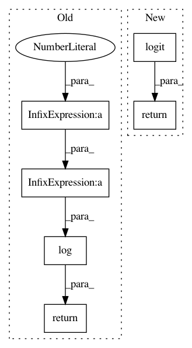

fdc27656b413cc9f40cc2f77c25f2983231ef3dd,paysage/layers.py,BernoulliLayer,inverse_mean,#BernoulliLayer#Any#,68
Before Change
return en.expit(loc)
def inverse_mean(self, mean):
clipped_mean = mean.clip(min=en.EPSILON, max = 1 - en.EPSILON)
return numpy.log(clipped_mean/(1-clipped_mean))
def log_partition_function(self, loc):
return numpy.logaddexp(0, loc)
After Change
return B.expit(loc)
def inverse_mean(self, mean):
return B.logit(mean)
def log_partition_function(self, loc):
return B.softplus(loc)
In pattern: SUPERPATTERN
Frequency: 4
Non-data size: 6
Instances
Project Name: drckf/paysage
Commit Name: fdc27656b413cc9f40cc2f77c25f2983231ef3dd
Time: 2016-12-19
Author: charlesfisher@Charless-MacBook-Pro.local
File Name: paysage/layers.py
Class Name: BernoulliLayer
Method Name: inverse_mean
Project Name: pymc-devs/pymc3
Commit Name: 8bd963500d490db3d7ed15bed06af3d439b90006
Time: 2015-06-18
Author: jsalvatier@gmail.com
File Name: pymc3/distributions/transforms.py
Class Name: SimplexTransform
Method Name: forward
Project Name: scipy/scipy
Commit Name: 6707aa1b01ecebf47d2be068cf32b8e754a5b30a
Time: 2016-06-10
Author: argriffi@ncsu.edu
File Name: scipy/stats/_continuous_distns.py
Class Name: logistic_gen
Method Name: _ppf
Project Name: pymc-devs/pymc3
Commit Name: 8bd963500d490db3d7ed15bed06af3d439b90006
Time: 2015-06-18
Author: jsalvatier@gmail.com
File Name: pymc3/distributions/transforms.py
Class Name: LogOddsTransform
Method Name: backward